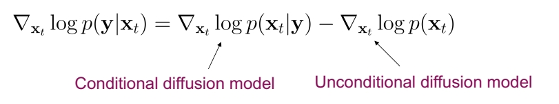
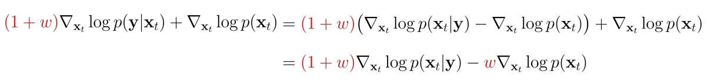

P66
Conditional Generation and Guidance
P67
✅ 通常需要的是特定的生成，而不是随意的生成。因此需要通过control引入特定的需求。
以下是文生图的例子：

Ramesh et al., “Hierarchical Text-Conditional Image Generation with CLIP Latents”, arXiv 2022.
Saharia et al., “Photorealistic Text-to-Image Diffusion Models with Deep Language Understanding”, arXiv 2022.
P68
Conditioning and Guidance Techniques
Explicit Conditions
Classifier Guidance
Classifier-free Guidance
P69
Explicit Conditions
P70
Conditional sampling can be considered as training \(p(\mathbf{x} |\mathbf{y} )\) where \(\mathbf{y}\) is the input conditioning (e.g., text) and \(\mathbf{x}\) is generated output (e.g., image)
Train the score model for \(\mathbf{x}\) conditioned on \(\mathbf{y}\) using:
$$ \mathbb{E} _ {(\mathbf{x,y} )\sim P\mathrm{data} (\mathbf{x,y} )}\mathbb{E} _ {\epsilon \sim \mathcal{N}(\mathbf{0,I} ) }\mathbb{E} _{t\sim u[0,T]}||\epsilon _ \theta (\mathbf{x} _ t,t;\mathbf{y} )- \epsilon ||^2_2 $$
The conditional score is simply a U-Net with \(\mathbf{x}_t\) and \(\mathbf{y}\) together in the input.

✅ 需要 \((x，y)\) 的 pair data.
P71
Classifier Guidance
P72
Bayes’ Rule in Action

✅ \(p(y)\) 与 \(\mathbf{x} _ t\) 无关，因此可以去掉。
训练方法
✅ 第一步：需要一个训好的p(x)的 diffusion model 。
✅ 第二步：训练一个分类网络，输入xt能够正确地预测控制条件（y不一定是离散的类别）。
✅ 第三步：取第二步的梯度，用一定的权重\(w \)结合到第一步的forward过程中。\(w \)决定分类器的影响力。
✅ 只需要部分pair data和大量的非pair data。但需要单独训练一个分类器。
相关论文
🔎 Song et al., “Score-Based Generative Modeling through Stochastic Differential Equations”, ICLR, 2021
🔎 Nie et al., “Controllable and Compositional Generation with Latent-Space Energy-Based Models”, NeurIPS 2021
🔎 Dhariwal and Nichol, “Diffusion models beat GANs on image synthesis”, NeurIPS 2021.
P73
Classifier-free Guidance
P74
Instead of training an additional classifier, get an “implicit classifier” by jointly training a conditional and unconditional diffusion model. In practice, the conditional and unconditional models are trained together by randomly dropping the condition of the diffusion model at certain chance.
✅ Classifier Guidance 的问题:
✅ 1. 需要额外训练一个噪声版本的图像分类器
✅ 2. 分类器的质量会影响按类别生成的效果
✅ 3. 过梯度更新图像会导致对抗攻击效应，生成图像可能会通过人眼不可察觉的细节欺骗分类器，实际上并没有按条件生成。
implicit classifier
Recall that classifier guidance requires training a classifier. Using Bayes’ rule again:

- The modified score with this implicit classifier included is:

✅ 把公式1代入Classifier Guidance Diffusion Model的公式中，得到公式2
训练方法
✅ 训一个模型同时支持 Conditional 和 Unconditional 两个任务。
✅ 训练时随机地使用“条件+数据”和“None+数据”进行训练。
🔎 Ho & Salimans, “Classifier-Free Diffusion Guidance”, 2021.
P75
Trade-off for sample quality and sample diversity

Large guidance weight \((\omega )\) usually leads to better individual sample quality but less sample diversity.
Ho & Salimans, “Classifier-Free Diffusion Guidance”, 2021.
P76
Summary
We reviewed diffusion fundamentals in 4 parts:
- Discrete-time diffusion models
- Continuous-time diffusion models
- Accelerated sampling from diffusion models
- Guidance and conditioning.
Next, we will review different applications and use cases of diffusion models after a break.
本文出自CaterpillarStudyGroup，转载请注明出处。
https://caterpillarstudygroup.github.io/ImportantArticles/